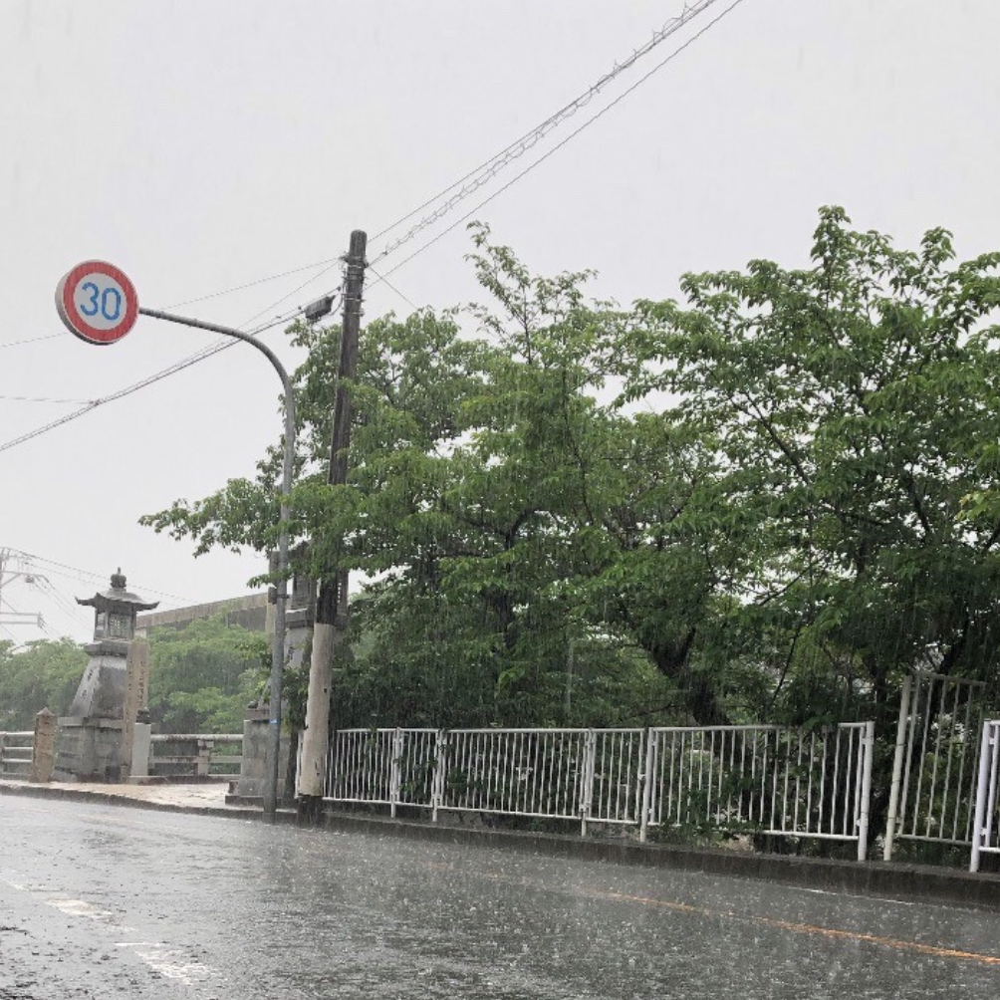
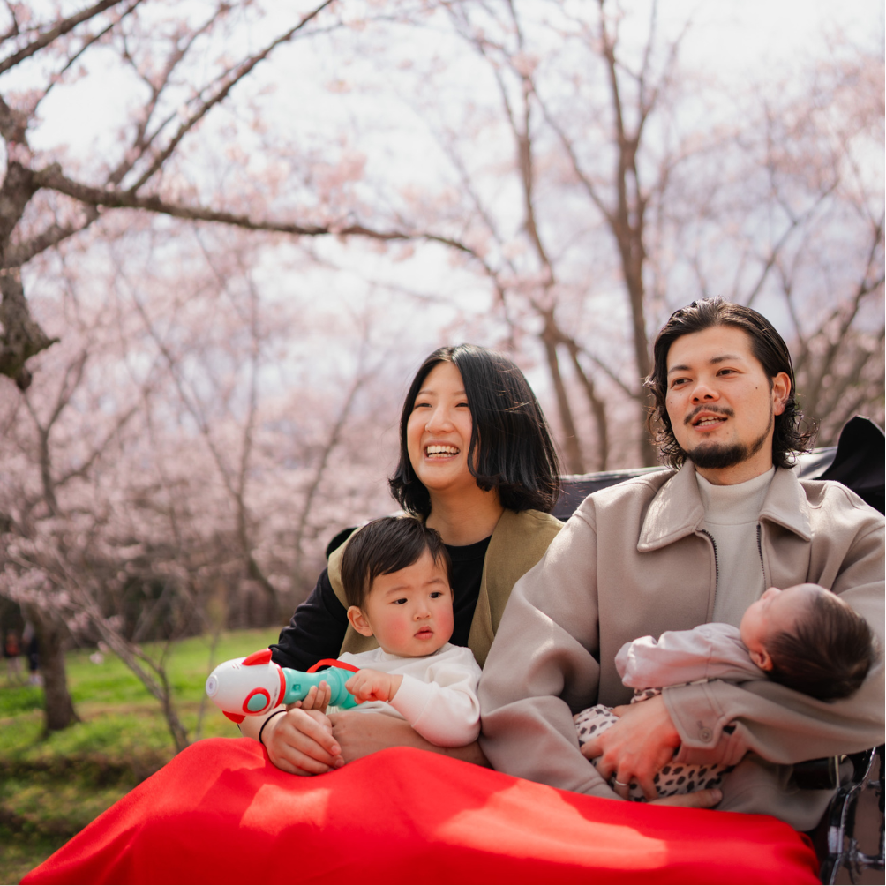
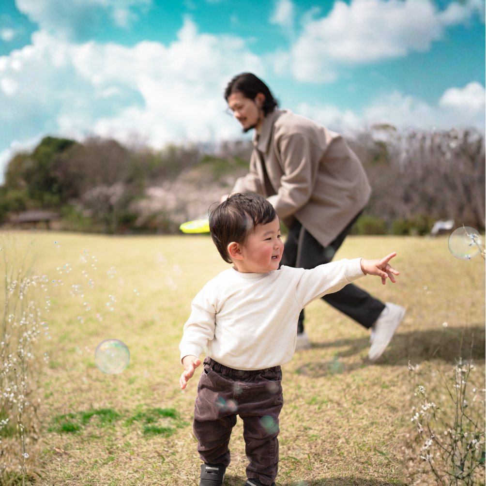
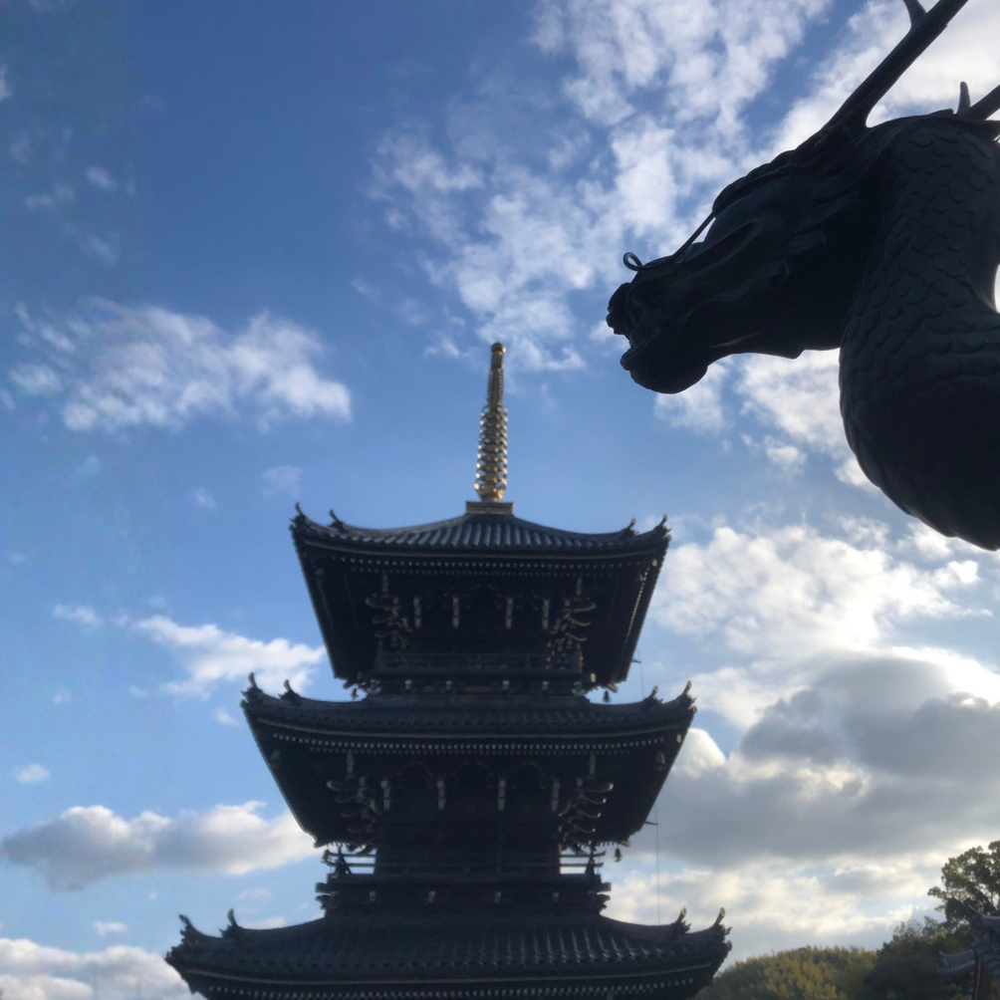
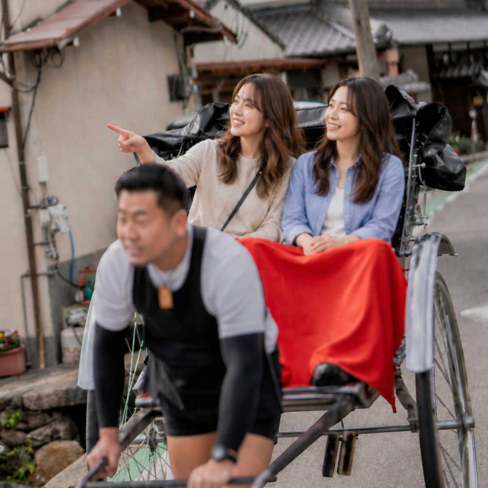
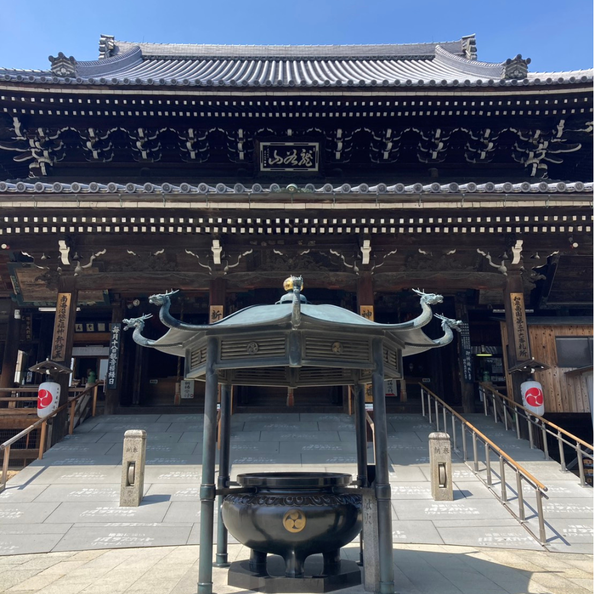
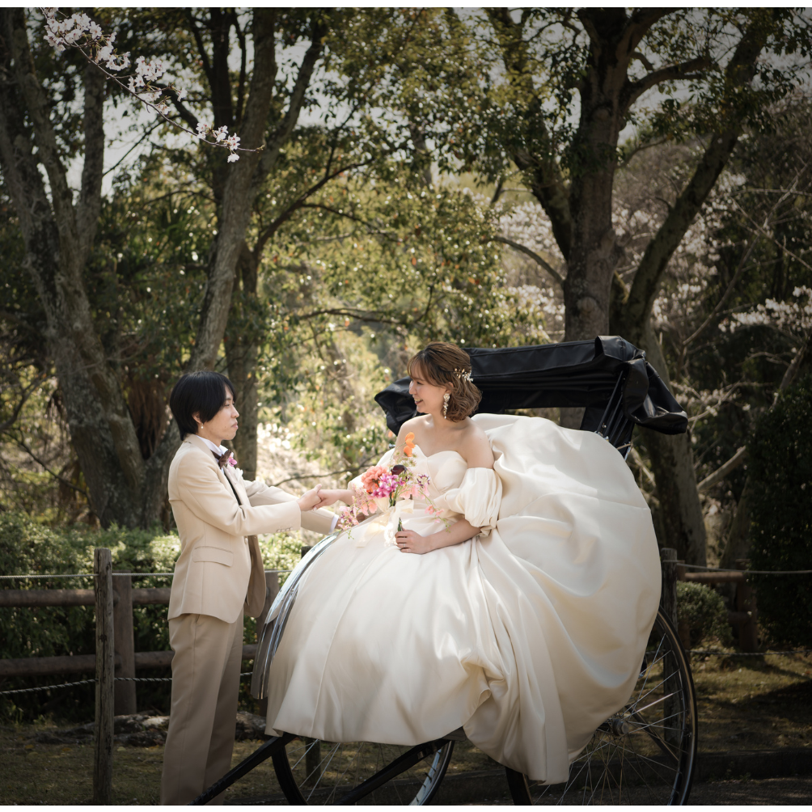
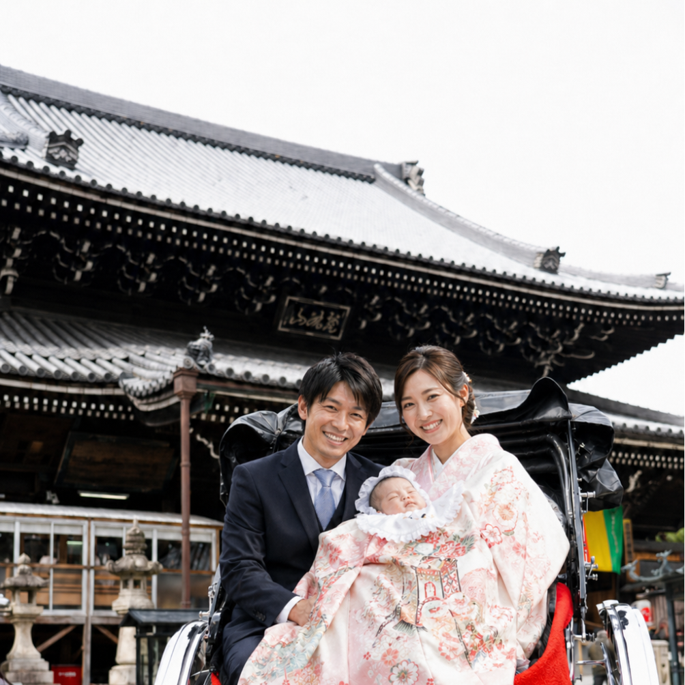
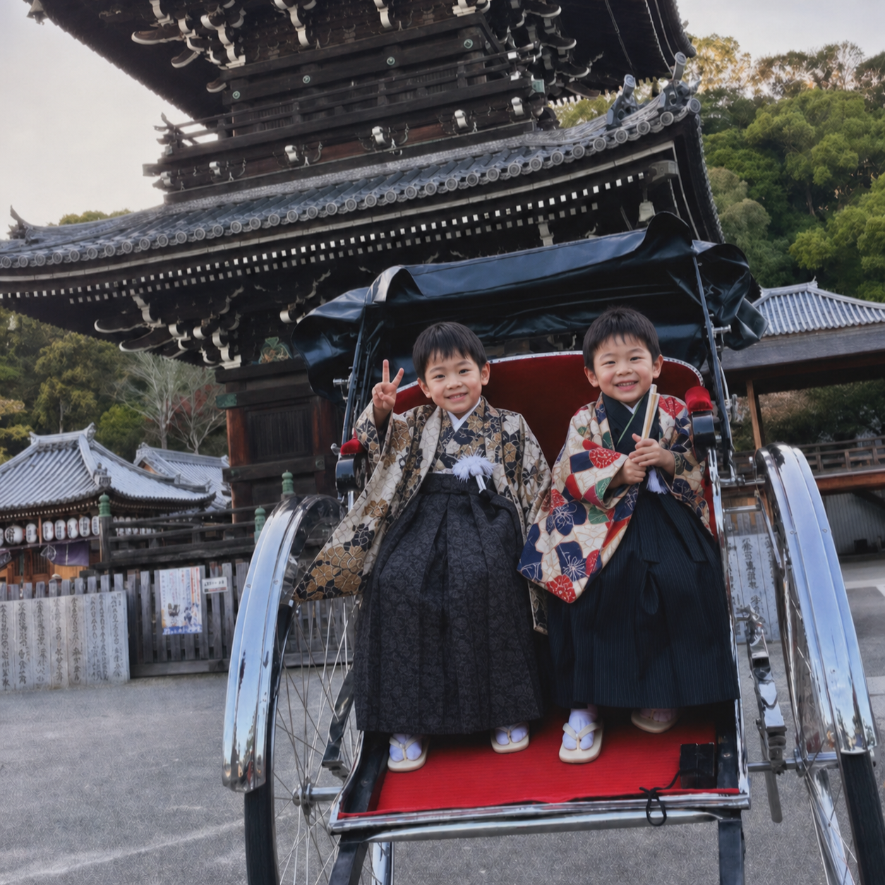

水間門前町とは？貝塚で
ゆっくり過ごせる穴場スポット
大阪・貝塚にある水間門前町は、にぎやかな観光地とは少し違う時間が流れる場所です。1300年以上続く水間寺に残る空気、自然の音が聞こえる水間街道、人力車で味わう町の奥行きを紹介します。
Articles
水間門前町や貝塚で、
ゆっくり過ごせる場所を探している人へ。
大阪・貝塚にある水間門前町は、にぎやかな観光地とは少し違う時間が流れる場所です。1300年以上続く水間寺に残る空気、自然の音が聞こえる水間街道、人力車で味わう町の奥行きを紹介します。


記念日フォトは、誕生日や結婚記念日、家族の節目を写真として残す過ごし方です。水間門前町で過ごす静かな時間と、人力車で残す自然な表情の魅力を紹介します。

誠屋の人力車は、観光のためだけではなく水間門前町の地域活性化として始まりました。人混みを避け、町の空気をゆっくり感じる人力車の役割を紹介します。

大阪で人力車に乗るなら、貝塚市・水間門前町にある誠屋の人力車があります。人混みを避け、町の空気をゆっくり感じる人力車体験を紹介します。

こどもの日の過ごし方として、今年の姿を写真に残すという選択があります。水間門前町で家族の時間と子どもの成長を残す、記念日フォトプランを紹介します。


大阪市内から少し足を伸ばすなら、京都・奈良・水間門前町で何が違うのか。距離、人の多さ、過ごし方を整理し、静かな時間を選ぶ視点を紹介します。

記念日は、その日をどう過ごすかだけでなく、あとからどう残るかも大切です。写真を飾る、見返す、贈るという形で続いていく記念日の価値を紹介します。

大阪市内で生まれ育った視点から、水間門前町に住んで感じた静けさ、生活のしやすさ、仕事の課題、これからの可能性をリアルにまとめます。

仕事で頭が疲れたとき、静かなお寺や門前町で整いやすい理由を、ドーパミン、セロトニン、オキシトシン、エンドルフィンの4つの働きから紹介します。

水間門前町で車なし生活はできるのか。車を手放して感じた、駅やスーパーとの距離、水間鉄道、歩くことで見えてくる時間をまとめます。

老後は田舎でゆったり暮らしたい。その理想は本当に現実的なのか。水間門前町で暮らして感じた、体力や生活の負担のリアルをまとめます。








大阪市内から約1時間。PASSATORE でのランチ、人力車体験、1分ムービー、haru食堂+ 水間店や千石舘までつないだ静かな女子旅を紹介しています。

PASSATORE、水間寺・水間門前町、人力車、千石舘、善兵衛ランドに加えて、haru食堂+ 水間店と松葉温泉 滝の湯までつないだ一日の過ごし方を紹介しています。


人が多すぎず、無料駐車場や綺麗なトイレ、自動販売機、芝生、近くのカフェや温泉までそろった、水間公園でのGWピクニックの魅力をまとめています。

南大阪WEDDINGと誠屋のコラボによる、水間公園でのロケーション撮影と人力車を組み合わせたウェディングフォトプランを紹介しています。

水間寺でお宮参りをされたご家族向けに、ご祈祷のあと人力車と一緒に家族写真を残せる誠屋の無料記念撮影をご紹介します。赤ちゃんと家族みんなの今を、水間らしい空気とともに残せる記事です。

水間寺での七五三ご祈祷と、人力車で残す家族写真をご紹介します。お参りの日を、家族みんなの今が残る思い出として丁寧に残したい方に向けた記事です。